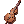
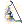
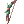
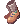
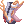
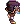
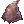

Cybard's Maestro Pure Barding Guide For PvM
| Ministrel AKA Maestro | |||||||||||||||||||
|---|---|---|---|---|---|---|---|---|---|---|---|---|---|---|---|---|---|---|---|
 | |||||||||||||||||||
| Job Base: | Archer | ||||||||||||||||||
| Written By: | Cybard | ||||||||||||||||||
| |||||||||||||||||||
Overview
Maestro is one of must-have support class on any instance run. having maestro on your party is tricky, because your team should play around the bard instead of their personal build. Lots of class will become overpowered with the help of experienced maestro, while other won't noticed any single difference. The key to get full benefit of maestro, is always look for your ability which only has Cast delay instead of cooldown (e.g for Ranger, it's best to use aimed bolt instead of arrow storm or auto-attack because they could spam them for huge DPS).
Playing as a Maestro isn't that hard. you just need to know your positioning, switching your skills, knows what buff you should give, and getting that sweet 150 INT and 150 DEX. In this guide, I'll give out my personal build to barding. You won't be able to survive soloing, but you'll become great asset on instance run or MVP hunting. I also going to give a little bit of tips on how to leveling Maestro on it's early stage.
Before Getting Started
I want to put this section for non-Maestro player who might read this guide. Please do this if you play with Maestro
- Don't scatter away. Try to stack near Maestro so it's easier to buff everyone with song combo.
- Always use your spam skill when fighting MVP while buffed by bragi.
- You don't have to always stay on Bard's song. It'll give you 20 second buff so you just need to re-enter here and then.
Stats
the stats I listed down below is what stat you should aim including bonus (eg if I stated 100 VIT, you can achieve it by 93 base VIT + 7 job bonus). These stats are just bare minimum, so you can adjust them as you like. I'll arrange the stats by the most important to most useless stats.
- Intelligence (INT)
INT is primarily used for  Poem of Bragi and helps with SP pool and regeneration. INT affect After-cast delay reduction and capped at 150 INT which reduced to 100%
Poem of Bragi and helps with SP pool and regeneration. INT affect After-cast delay reduction and capped at 150 INT which reduced to 100% (Skill spam FTW!!). This is the most crucial stats of your job. No matter what, you SHOULD have 150 total INT. You can easily achieve this by put 125 base INT and buffed by Clementia (125 base + 9 bonus job + 16 Clementia = GG). You can get your own 150 INT without Clementia with gearing which I'll talk about later
- Dexternity (DEX)
Dex is equally imporant as INT because it'll reduce Variable cast time through  Poem of Bragi. You should aim as much as you can as long as it's multiple by 10. Be sure to always use
Poem of Bragi. You should aim as much as you can as long as it's multiple by 10. Be sure to always use Improve Concentration to get easy DEX bonus. You should at least get total 140 DEX to help other caster achieved Insta-cast
- Vitality (VIT)
100 total VIT is a must, no matter what class you are. it's purely for stun immunity and increasing your Max HP. You can add this stat so you won't get 1-shotted by mob, especially things like Earthquake and
Hell's Judgment. This stats also boost
Apple of Idun Max HP per 10 VIT and HP regeneration per 2 VIT
- Agility (AGI)
It used to increase your flee just in case you're out of formation and get hit by mob. This stats also boost Assassin Cross on Sunset ASPD per 10 AGI. Personally I'll aim 90 AGI to help other melee player getting 193 ASPD through Assassin Cross on Sunset. It also reduce your casting animation delay, but I'm not quite sure how it works. It also increase
Whistle flee rate per 10 AGI
- Luck (LUK)
LUK is used purely for perfect dodge and stone curse resist. I usually put rest of point here. It increase Whistle perfect dodge per 10 LUK.
- Strength (STR)
You just need this stats for increasing weight limit. You can safely put 1 STR and live your happy life unless you want to help your party member to carry some equipments or potions. Note that you need to bring at least  60 Regrettable Tears and
60 Regrettable Tears and  5 Yggdrasil Leaf at all time. You can bring more items but you should have those item at disposal
5 Yggdrasil Leaf at all time. You can bring more items but you should have those item at disposal
Skill Build
First Job Skills
Archer skill tree is quite straight forward since it only has 5 skill and everything is useful for bards
| Skill | Level | Notes |
|---|---|---|
| 10 | Your only AoE attack to help on gramps. Not a fans of this skill since it push enemy back, makes the lure group scatter and ruins the equilibrium for everyone. | |
| 10 | Your bread and butter until you evolved to Clown. This skill is actually better than musical strike so you should use bow until you're ready to grab your guitar. | |
| 10 | Your most useful buff. nuff said. | |
| 10 | More dex. nuff said. | |
| 10 | Not that important for a bard, but it quite helpful for your early stage |
Second/Trans Job Skills
Most of your great skills are on Bard tree. I'll divide between what you should get, and some optional skills
| Skill | Level | Notes |
|---|---|---|
| 10 | Increase your instrument ATK, increase movement speed while singing, buff your songs bonus. Max it. | |
| 10 | ASPD boost for melee class. If your party has melee character, be sure to gave them this buff. Most of the time, this skill will gives 193 ASPD to melee class. | |
| 10 | Increase MaxHP and heal everyone inside per 6 second. This skill is every priest nightmare because everyone suddenly has their MaxHP boosted while its current HP stay as is. If you decided to buff someone with it, remember to reapply the skill before the buff gone. | |
| 8-10 | It adds flee and perfect dodge. You might rarely use this skill, but pretty helpful for tanker. | |
| 10 | Your signature skill. This is the sole reason why Maestro > Wanderer and the sole reason why bard is extremely useful. People will ask bragi and you need to keep the buff up every single time. Be sure to check who actually need bragi instead of randomly spam bragi to everyone. For people who aren't bard, please stick with the pard if you need this buff because its hard to keep up with everyone since our movement speed decreased so bad when singing. Do note that you only need 150 INT including bonus from gear and buff! More than that is waste of point. Put rest of them to your DEX |
If you still want to hit something :
| Skill | Level | Notes |
|---|---|---|
| 1 | Pre-requisite. Don't bother to use this, double strafe is much better than this | |
| 10 | Finally a real damage skill for bard. Use this skill until you got bored and decided to choose the singing path | |
| 3-5 | Your fun-to-use skill. If you want to get level 5 tarot, reduce your whistle to level 8. If level 3 is enough, get lv 10 whistle |
If you decided to put your bow to rest :
| Skill | Level | Notes |
|---|---|---|
| 1 | You can use these if you miraculously met another dancer. all of ensemble skills are pretty OP. if you decided to learn all ensemble lv 1, you'll get 2 skill point left. You can spent them to either skill below | |
| 5 | 80% all element resist. All magic will tickle your team mate and extremely helpful for boss who always spam magic skill (such as Bakonawa) | |
| 5 | Increase ATK by 250 and DEF by 50. I'm not quite sure if its boost Hard DEF or Soft DEF. Either way, 250 bonus ATK is damn great | |
| 3 | Increase ATK by 125 and gives DEF-piercing attribute. It only works on anyone who equips Lv 4 weapon. Unfortunately we can't get lv 5 song without sacrificing maestro skill point. FYI it adds 175 ATK on level 5. |
Third Job Skills
I only list most used skill and few optional skill on the list. Be sure to read down below on how to use Maestro's buff
| Skill | Level | Notes |
|---|---|---|
| 10 | Increase your max SP and SP Regeneration. SP Regen effect only applies if you didn't move for 10 seconds. You can cast skill as long as you're not moving. It also boost lots of skill ability. | |
| Windmill Rush | 5 | At level 5, it'll boost 30 + Voice_Lessons_Lv + (JobLv ÷ 5), thus makes them add 52 ATK at max job level. This is your primary buff and you should reapply them whenever the effect almost gone. |
| 5 | Another great buff which increase all party member MaxHP by 25%. It requires 1 Regrettable Tears per cast. Just like Apple of Idun, you should reapply them before the skill runs out so the priest wont freaked out.
| |
| 5 | It buffs certain knight and crusader skills, but the real use is the debuff for enemy. It reduce 45 flee and 40% ASPD and works with boss. You should always apply this to MVP and other annoying high-flee or high-ASPD enemy. Be sure to carefully target your enemy because if you hit your non-swordsman allies with this, their flee will be reduced too. | |
| 5 | Extremely great buff which increase Equip ATK, ASPD, Fixed Cast Time, and certain Ranger's Warg skills. You need other performer to cast this song, Bard or Dancer is fine either way | |
| 5 | Regenerate 35 SP per 5 second. You need other performer to cast this song, Bard or Dancer is fine either way |
At this point, you'll have 9 Skill Point left. Here's few suggestion for your rest of skill point
| Skill | Level | Notes |
|---|---|---|
| 5 | You can maxed out Invulnerable Siegfried, A Drum on the Battlefield, and The Ring of Nibelungen if you have dancer at disposal. | |
| 5 | It revives target but drain it's SP. In practice, SP is way more precious than HP. You should use Yggdrasil Leaf instead and let the priest heal them. You can revive people with Evil Druid armor using this skill
| |
| 5 | Deals (800% ATK + 600% MATK) * (base_level/100). Which means, the damage scale with level. It's kinda like trap, but explode after 13 second. Be sure to get Dominion Impulse if you decided to get this skill. Also, the physical portion deals elemental damage according to your weapon element and somehow it's considered as Melee attack | |
| 5 | Deals 1200% MATK * (base_level/100). I'm using this on my bard because you'll get lv 1 reverberation, thus able to help dealing more damage compared to other choice. | |
| 5 | If you don't really want to deal damage and wanted to do something fun with RNG. It actually affected by Bragi so you can spam them when bragi'd by other bard | |
| Severe Rainstorm | 4-5 | You can only put level 4 with 9 leftover. You can sacrifice one of |

Super Saiyan Mode
You can become super saiyan when recieved 「Soul Link」 buff. That buff will gave you :
- All Performance Skills will affect the target him/herself.
- Greatly increases Movement Speed while performing.
- Allows the use of the lv 10 dancer skill, such as :
Humming. Adds 20 + DEX/10 HIT
Please Don't Forget Me. Reduce enemy ASPD by 30 + dex/10 % and movement speed by 20 + AGI/10%
Fortune's Kiss. Adds 10 + LUK/10 Crit
Service for You. Boost 25 + INT/10 %Max SP and reduce 50 + INT/10 %SP Consumption
Equipment
You dont really need any particular equip as long as you have 150 INT. What I listed below is some equip suggestion to make your INT 150 without clementia or increasing your DEX more than 150. I only list the largest drop rate mob on "Way to obtain" column, you can check complete list of who dropped the item by clicking item name.
Upper Headgear
| Item Name | Way to obtain | Effect | Notes |
|---|---|---|---|
 Apple o' Archer [0] Apple o' Archer [0]
|
Archer Skeleton | DEX + 3 | - |
| Mistress | INT + 1 | - | |
 Crown [0] Crown [0]
|
Osiris | INT + 2 | - |
 Fricca's Circlet [0] Fricca's Circlet [0]
|
Hydrolancer | INT + 2, Maximum SP + 50, MDEF + 10 | - |
| Pharaoh | INT + 2, LUK + 1, MDEF + 3 | - | |
| Headgear Quest | INT + 2, Maximum SP + 150 | - | |
| Maya | INT + 2 | - | |
 Maestro Song's Hat [1] Maestro Song's Hat [1]
|
Job Change | INT + 1, DEX + 1, MDEF + 5 | Increase damage with ranged attacks by 5% and decrease SP cost of [Windmill Rush] by 10. |
| Cash Shop (5000CP) | INT + 3, STR + 2 | - | |
| Cash Shop (5000CP) | DEX + 2 | Has chance to drop  Milk everytime kill monster. Milk everytime kill monster.
| |
| Headgear Quest | DEX + 3, Flee + 3 | - | |
| Headgear Quest | - | Increases Movement Speed, ASPD +10%, Increases Variable Cast Time by 25%. It's great for mobility since your movement will be crippled when singing. | |
| Headgear Quest | INT + 2, SP + 100 | - | |
 Crown of Deceit [1] Crown of Deceit [1]
|
Cash Shop (5000CP) | INT + 4, Mdef +10 (Upper + Middle) |
Cast-time reduced by 10%. If refined to +7 or higher, Def +2, Matk +5% additional Cast-time reduced by 5%. If refined to +9 or higher, additional Mdef +5 and Matk +5%, additional Cast-time and after-cast delay reduced by 5%. |
Middle Headgear
| Item Name | Way to obtain | Effect | Notes |
|---|---|---|---|
 Black Frame Glasses [0] Black Frame Glasses [0]
|
Cash Shop (5000CP) | INT + 1, MDEF + 2 | Can be slotted using  Spiritual Auger from Cash Shop (7500CP). Spiritual Auger from Cash Shop (7500CP).
|
 Robo Eye [0] Robo Eye [0]
|
Cash Shop (5000CP) | DEX + 1 | Also increase ATK and MATK by +2%. |
 Sigrun's Wings [0] Sigrun's Wings [0]
|
Cash Shop (5000CP) | DEX + 1 | Unique headgear which has different bonus depends on user's class. Good middle headgear if you want to swap around with your other character. |
Lower Headgear
| Item Name | Way to obtain | Effect | Notes |
|---|---|---|---|
 Gangster Mask [0] Gangster Mask [0]
|
Zerom | - | Adds 15% resistance to silent. |
 Rainbow Scarf [0] Rainbow Scarf [0]
|
Cash Shop (5000CP) | INT +1, MDEF +2 | Also increase MATK by +1%. |
Armors
| Item Name | Way to obtain | Effect | Notes |
|---|---|---|---|
| Elemental Armor | Cash Shop (4000CP) | 75% element reduction | There are 4 elemental armor,  Water, Water, |
 Hero Target Suit [1] Hero Target Suit [1]
|
Loot Box | Max HP/SP +5%. All Stats +1, Ranged Physical Attack Strength +3%, ASPD +1. | Obtained from Bios Island or Morse's Cave |
 Anti-Magic Suit [1] Anti-Magic Suit [1]
|
GMT Instance | Max HP +5%, MDEF +10. | MDEF +5 when upgraded to +7. MHP +2% when upgraded to +9. Obtained from |
 Divine Cloth [1] Divine Cloth [1]
|
Echio | - | Increases tolerance to Curse, Silence, Stun, Sleep, and Stone Curse statuses by 5%. |
Weapons
You need 2 weapon for this build, 1 good instrument and any equipable for song switching.
| Item Name | Way to obtain | Effect | Notes |
|---|---|---|---|
 Violin Violin
|
Weapon Shop | - | Your very first instrument. You can buy this from Comodo weapon shop (Input this on your chat : /navi cmd_in01 128/165) |
| Tatacho | DEX +3, AGI +2 | - | |
 Green Whistle [1] Green Whistle [1]
|
Antler Scaraba | MATK + 50 | Decrease Windmill Rush casting time and SP consumption if it's refined +7 or higher. Able to enchant via Malangdo Enchant |
 Harp of Nepenthes [2] Harp of Nepenthes [2]
|
Nepenthes | INT + 2 | Able to enchant via Malangdo Enchant |
|  Contrabass [2] | Perre | MATK + 120 | Reduce Improvised Song cooldown by 2 seconds. |
| Crimson Violin [2] | Drop from mob | tons of raw ATK | Due to lots of mob who able to drop this weapon, you can see complete list here. Only use this if you able to get refine more than +10 |
 Thanatos Violin [1] Thanatos Violin [1]
|
Instance | INT + 6, VIT + 6, LUK - 6. | Trade  200 Gray Shard from Ghost Palace Instance. 200 Gray Shard from Ghost Palace Instance.
|
| Any bow | - | - | You can use *any* bow you want. In fact, you can even bring any weapon you can equip. You only need bow to weapon-switch them for quick song rotation. Below is few good bow you can use for leveling |
 Eden Group Bow3 [0] Eden Group Bow3 [0]
|
Eden quest | - | Reward for eden group's equipment quest. Always choose this instead of instrument |
| Thanatos Bow [1] | Instance | INT + 6, VIT + 6, LUK - 6. | Trade 200 Gray Shard from Ghost Palace Instance.
|
|  Bow of Storm [1] | Grand Pere | RangedATK + 30% | You can also trade  50 Tooth Of Jitterbug from Jitterbug Instance. It reduce Severe Rainstorm cooldown by 2 seconds, but increase it's SP consumption by 15. 50 Tooth Of Jitterbug from Jitterbug Instance. It reduce Severe Rainstorm cooldown by 2 seconds, but increase it's SP consumption by 15.
|
|  Elven Bow [1] | Gargoyle | DEX + 1 | Combined with  Elven Arrow you'll get 50% bonus RangedATK. Elven Arrow you'll get 50% bonus RangedATK.
|
 Crimson Bow [2] Crimson Bow [2]
|
Drop from mob | tons of raw ATK | Due to lots of mob who able to drop this weapon, you can see complete list here. Only use this if you able to get refine more than +10 |
Garments
| Item Name | Way to obtain | Effect | Notes |
|---|---|---|---|
| Incarnation of morroc | Max HP +100 | Reduce neutral damage by 5%. | |
 Gigant Snake Skin [1] Gigant Snake Skin [1]
|
Faceworm Instance | ???? | Each has random enchantment and random refine rate. Be sure to get at least +9 refine rate. For enchantment, if you already has 150 INT, aim for DEX. Else, get some INT. Also combo with  Temporal Boots and their enchanted version. Temporal Boots and their enchanted version.
|
| Naght Sieger | Max HP + 5%, MDEF + 2, MATK + 1%. | - | |
 Airship's Cloak [1] Airship's Cloak [1]
|
Airship Assault | Flee + 20 | Reduce neutral damage by 10%, Reduce casting time by 20%. |
Shoes
Same as armor, choose for survivability
| Item Name | Way to obtain | Effect | Notes |
|---|---|---|---|
|  Goibne's Greaves [0] | Drop | Max HP + 5%, Max SP + 5%, MDEF + 3 | Dropped by Despero of Thanatos. |
|  Variant Shoes [0] | Drop | Max HP + 20%, Max SP + 20% | Don't upgrade this shoes since it'll decrease the bonus per refine. Dropped by Beelzebub. |
 Enhanced Variant Shoes [1] Enhanced Variant Shoes [1]
|
Varies | Max HP + 12%, Max SP + 12% | You can get this from Monster Hunter Instance or Loyal Merchant. Every refine adds Max HP, Max SP, DEF, and MDEF. |
 Temporal Dex Boots [1] Temporal Dex Boots [1]
|
Instance | Max HP + 300, Max SP + 30. | You can read complete guide on how to get it Here. Buying from other player is far faster and easier. If you can, try to upgrade them multiple of 3. Get this if you need more DEX, plus it'll make almost all of your skill insta-cast |
|  Temporal Vit Boots [1] | Instance | Max HP + 300, Max SP + 30. | You can read complete guide on how to get it Here. Buying from other player is far faster and easier. If you can, try to upgrade them multiple of 3. Get this if you need more HP |
Note : For temporal boots, you should get Max HP enchantment or stop at INT+3 or DEX+3. For it's second enchantment, Muscular Endurance or Hawk's Eye is the best
Accessories
We'll use accessory to boost more INT, DEX, or survivability
| Item Name | Way to obtain | Effect | Notes |
|---|---|---|---|
 Black Rosary [1] Black Rosary [1]
|
Drop | MDEF + 15 | Dropped by Dark Wraith and Dark Priest. |
| Enhanced Variant Shoes [1]
|
Varies | Max HP + 12%, Max SP + 12% | You can get this from Monster Hunter Instance or Loyal Merchant. Every refine adds Max HP, Max SP, DEF, and MDEF. |
| Temporal Dex Boots [1]
|
Instance | Max HP + 300, Max SP + 30. | You can read complete guide on how to get it Here. Buying from other player is far faster and easier. If you can, try to upgrade them multiple of 3. Get this if you need more DEX, plus it'll make almost all of your skill insta-cast |
| Temporal Vit Boots [1] | Instance | Max HP + 300, Max SP + 30. | You can read complete guide on how to get it Here. Buying from other player is far faster and easier. If you can, try to upgrade them multiple of 3. Get this if you need more HP |
Combo
few equip combo that'll help you
| Item Name | Way to obtain | Set Bonus | Notes |
|---|---|---|---|
| Chip Combo | Instance | Max HP + 20%, Max SP + 20% |  Broken Chip 01, Broken Chip 01,  Broken Chip 01, and, Broken Chip 01, and,  Runaway Chip. Get them through Last Room Runaway Chip. Get them through Last Room
|
| Ulle's Armor Set | Drop | -10% SP consumption |  Ulle's Cap [1],  Odins Blessing [1] Odins Blessing [1]
|
| NewOz combo | Jitterbug | -10% SP consumption |  Ukulele of Newoz [2], Ukulele of Newoz [2],  Hero Ring Of Newoz [1]. You can also trade 50 Tooth Of Jitterbug from Jitterbug Instance. Great for Hero Ring Of Newoz [1]. You can also trade 50 Tooth Of Jitterbug from Jitterbug Instance. Great for |
Builds
Summary of the section (optional)
Your build
Introduction about the build, brief summary, optional.
Stats
An example stat build goes here:
- STR 100
- AGI 100
- VIT 100
- INT 100
- DEX 100
- LUK 100
Skills
Example of an already currently laid out skill build, OR listing essential skills for the build with comments
Either text or image format.
Equipment
List of the key pieces of equipment recommended for said build.
Strategy
Explanation of the build's uses
Gameplay
Class specific tips and tricks, such as certain skill mechanics and special roles in certain environments.
For example: Warlock's spellbook mechanics and Kage/Oboro's charms, different weapon types and their uses for Rebellions
Leveling
Leveling places and tactics go here.
Recommended format:
- Lv1 - Lv30
- Name of the map & monsters
- Lv31 - Lv70
- Name of the map & monsters